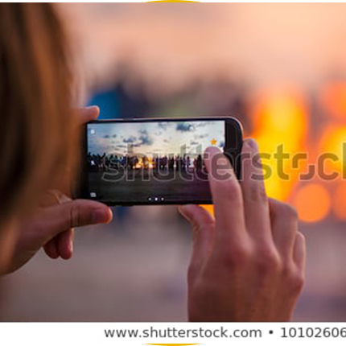

Показать активности
Главная
Тёплый
таймер
Рецепты
теплоты
Тёплые
фотографии
Детский
словарь
Теплые
заставки
100 способов
сказать "Спасибо"
Видео-
благодарности
Электронная
открытка
Online-
предсказания
Weeks of warmth
Теплый таймер
Подробнее
Рецепты теплоты
Подробнее
Теплые фотографии

Подробнее
Детский словать Takeda
Подробнее
Теплые заставки
Подробнее
100 способов сказать "Спасибо"
Подробнее
Видео-благодарности
Подробнее
Электронаая открытка Takeda
Подробнее